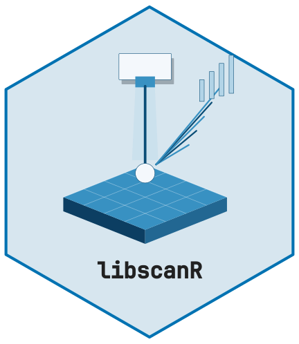
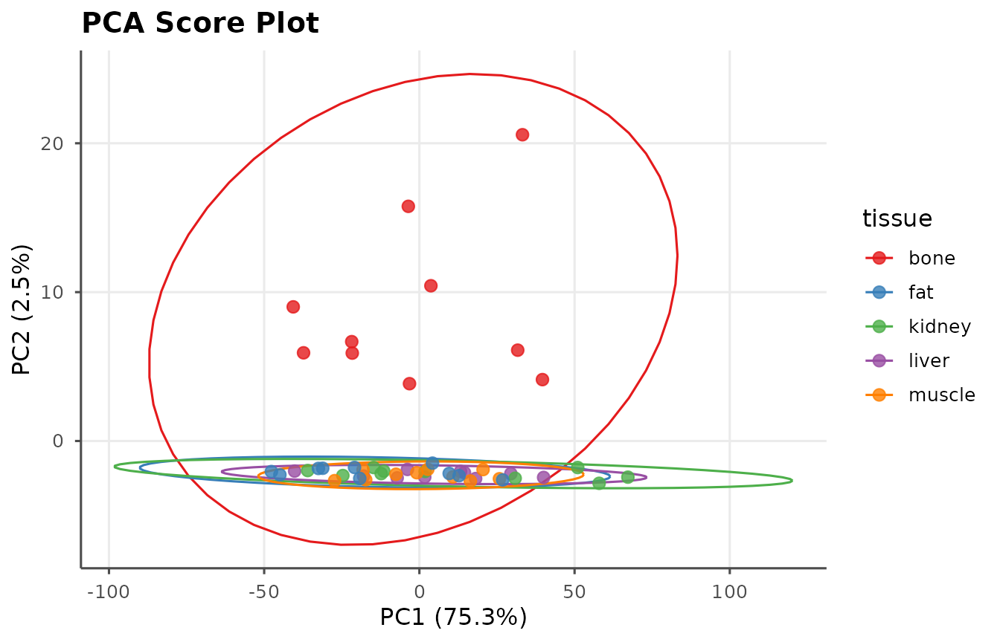
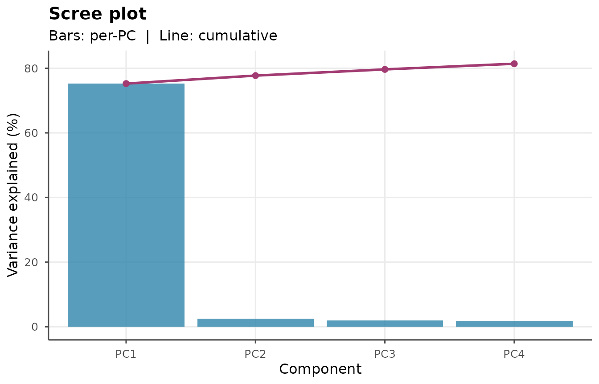
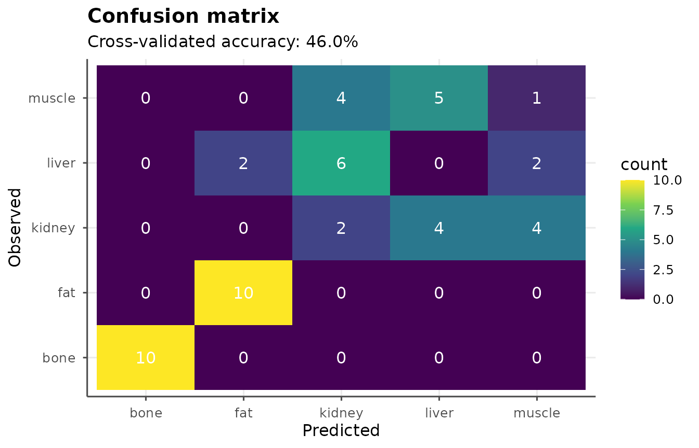

This vignette uses synthetic spectra. It illustrates exploratory calculations; it does not validate tissue identity, diagnostic thresholds or clinical performance.
Example: 5 simulated tissue types
ds <- ls_example_data("tissue")
table(ds$sample_info$tissue)
#>
#> bone fat kidney liver muscle
#> 10 10 10 10 10Exploratory analysis with PCA
pca <- ls_pca(ds, n_components = 4)
ls_plot_pca(pca, color_by = "tissue")
ls_plot_scree(pca)
Identifying discriminating elements
d <- ls_tissue_discriminate(ds, "tissue",
group_a = "bone",
group_b = "muscle")
head(d[!is.na(d$element) & d$significant, c("wavelength_nm",
"element",
"fold_change",
"fdr")], 15)
#> # A tibble: 0 × 4
#> # ℹ 4 variables: wavelength_nm <dbl>, element <chr>, fold_change <dbl>,
#> # fdr <dbl>fold_change is log2(mean intensity in group A / mean
intensity in group B). Channels with nonpositive means have no defined
logarithmic fold change and retain NA. Element annotations
are wavelength candidates; inspect candidate_count and
instrument resolution before attributing a difference to an element.
PLS-DA classification
The confusion matrix below uses held-out sample-level predictions.
Its basis is recorded in evaluation_basis;
validation = "none" instead reports optimistic training
performance. Patient- or site-level separation must be designed outside
this illustrative sample-level evaluation.
set.seed(21)
plsda <- ls_plsda(ds, grouping = "tissue",
n_components = 5, validation = "CV")
plsda
ls_plot_plsda(plsda, type = "confusion")
Rule-based classification with elemental ratios
These rules produce relative heuristic scores, not calibrated
probabilities. The output separates score_type and
status; missing line coverage or undefined ratios produce
an unclassified row. The previous confidence column has
been replaced. A PLS-DA prediction score is likewise an unrestricted
discriminant score.
ls_tissue_classify(ds[1:10], method = "ratio")
#> # A tibble: 10 × 5
#> sample_id predicted_tissue score score_type status
#> <chr> <chr> <dbl> <chr> <chr>
#> 1 bone_01 bone 0.999 heuristic_relative_score heuristic
#> 2 bone_02 bone 1.000 heuristic_relative_score heuristic
#> 3 bone_03 bone 1.000 heuristic_relative_score heuristic
#> 4 bone_04 bone 0.999 heuristic_relative_score heuristic
#> 5 bone_05 bone 0.997 heuristic_relative_score heuristic
#> 6 bone_06 bone 0.998 heuristic_relative_score heuristic
#> 7 bone_07 bone 0.999 heuristic_relative_score heuristic
#> 8 bone_08 NA NA heuristic_relative_score insufficient_sign…
#> 9 bone_09 bone 0.999 heuristic_relative_score heuristic
#> 10 bone_10 bone 0.999 heuristic_relative_score heuristic